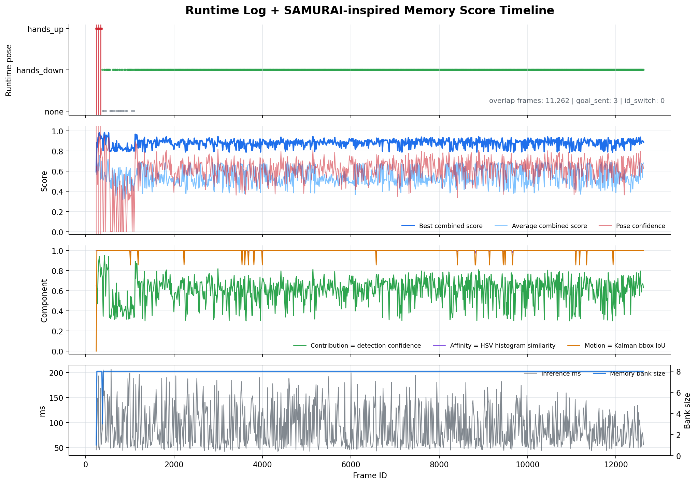

프로젝트 요약
이 챕터는 단순 모델 학습 결과가 아니라, 실제 매장 로봇 서비스에 연결하기 위해 만든 통합 AI 실행 파이프라인을 설명합니다. 상위뷰 카메라에서 피규어를 감지하고, 손을 든 피규어의 위치를 로봇 맵 좌표로 변환한 뒤, 좌석 점유 상태와 타겟 ID를 함께 TCP JSON으로 전송합니다.
- 입력: 상위뷰 USB 카메라 프레임, 카메라 보정값, homography 행렬, 매장 맵 정보
- 추론: 포즈 세그멘테이션, 피규어 추적, 좌석 ROI 점유 판단, SAM3 전용 표시 모드
- 후처리: 기하학적 포즈 재검증, figure overlap 필터, NMS, 목표 좌표 변환
- 출력:
vision_result,seat_resultTCP JSON 메시지
담당 구현 범위
포트폴리오 문서에서는 팀 전체 결과와 개인 기여가 섞여 보이면 평가자가 판단하기 어렵습니다.
이 챕터에서는 main_model 기준으로 직접 설명 가능한 구현 단위를 아래처럼 분리했습니다.
- 통합 런타임 구성:
perspective_model.py에서 카메라 입력, 모델 추론, 후처리, TCP 송신을 하나의 루프로 연결했습니다. - 실시간성 처리: 최신 프레임만 유지하는 큐 구조와 TCP 송신 큐 제한으로 오래된 결과가 누적되는 문제를 줄였습니다.
- 포즈 안정화: YOLO 결과에 Otsu 기반 실루엣 분석, Solidity, ReachRatio, figure overlap 필터를 추가했습니다.
- 좌석 점유 판단: 좌석 ROI 저장, empty 기준값 저장, Otsu 변화량 비교, fallback 판단 흐름을 구성했습니다.
- 로봇 연동: 픽셀 좌표를 맵 좌표로 변환하고, 메인 서버가 소비할 수 있는 JSON 프로토콜로 결과를 정리했습니다.
main_model 파일 구성
실제 구현은 다음 파일들을 중심으로 나뉩니다. 이 구성을 먼저 제시하면, 평가자가 코드를 볼 때 어떤 파일이 어떤 책임을 갖는지 빠르게 이해할 수 있습니다.
| 파일 | 역할 |
|---|---|
perspective_model.py |
최종 통합 AI 런타임. 포즈, 좌석, 타겟 추적, 좌표 변환, TCP 송신을 담당합니다. |
run_all.py |
실행 런처. 모델 경로, homography 경로, 맵 yaml/pgm 경로를 환경 변수로 주입합니다. |
samurai_memory_sam3.py |
SAM3/SAMURAI 방식의 메모리 점수 계산과 애플리케이션 레벨 타겟 추적 보조 로직입니다. |
h_cal.py |
상위뷰 픽셀 좌표와 ROS 맵 좌표를 맞추기 위한 homography 보정 도구입니다. |
final_udp_top.py |
상위뷰 카메라 프레임을 UDP 청크로 전송하는 별도 스트리머 구현입니다. |
test_samurai_memory.py |
SAMURAI 메모리 점수 계산, IoU, Kalman tracker 등 일부 추적 유틸리티 테스트입니다. |
통합 AI 런타임: 포즈, 좌석, 타겟 추적
최종 구현 단계에서는 단순한 hands_up 감지 모델을 넘어,
포즈 인식, 좌석 점유 판단, 타겟 피규어 추적, 맵 좌표 변환, TCP 결과 송신을 하나의
실시간 런타임으로 통합하였습니다. 이 통합 실행 파일은
main_model/perspective_model.py이며,
run_all.py는 실제 실행 환경에 맞는 모델 경로와 맵 경로를 주입하는 런처 역할을 합니다.
실시간 프레임 처리 구조
카메라 입력은 별도 스레드에서 읽고, 추론 루프는 최신 프레임만 소비합니다. 큐 크기를 1로 제한하여 오래된 프레임이 쌓이지 않게 하고, 처리 지연이 생길 경우 과거 프레임을 버리고 가장 최근 장면을 기준으로 판단합니다. 이 구조는 로봇 호출 시스템에서 중요한 실시간성을 확보하기 위한 선택입니다.
self._frame_queue = queue.Queue(maxsize=1)
# 새 프레임이 들어오면 기존 프레임을 버리고 최신 프레임만 유지
try:
self._frame_queue.get_nowait()
except queue.Empty:
pass
self._frame_queue.put((frame, meta))AI 동작 모드
현장 테스트 중 필요한 기능만 켜고 끌 수 있도록 네 가지 모드를 두었습니다. 전체 기능을 항상 실행하면 디버깅이 어려워지고 연산량도 커지므로, 좌석 점유, 포즈 인식, 타겟 표시를 분리하여 테스트할 수 있게 했습니다.
MODE_SEAT = 5: 좌석 점유 인식만 수행합니다.MODE_POSE = 6:hands_up/hands_down포즈 인식만 수행합니다.MODE_TARGET = 7: 타겟 피규어 표시와 추적 중심으로 동작합니다.MODE_ALL = 8: 포즈, 좌석, 타겟 추적을 모두 수행하는 통합 모드입니다.8 / 9키: 각각hands_up,hands_down전용 표시 모드로 전환합니다.
검증 캐스케이드
포즈 판단은 한 번의 모델 출력만으로 결정하지 않고, 여러 단계의 검증 캐스케이드를 거칩니다.
먼저 standing_model이 hands_up 또는 hands_down 후보를 찾고,
이후 기하학 검증기가 후보 박스 내부의 형태를 다시 분석합니다.
마지막으로 이전 프레임에서 검출된 figure_model 바운딩 박스와 겹치는 후보만 인정하여
배경 오탐을 줄입니다.
- YOLO 기반
standing_model로 포즈 후보를 검출합니다. - 후보 영역에 Otsu 이진화와 morphology 연산을 적용해 실루엣 마스크를 만듭니다.
Solidity와ReachRatio를 계산해 기하학적으로 포즈를 재판정합니다.figure_model의 피규어 추적 박스와 IoU가 낮은 후보는 제거합니다.- 가장 신뢰도가 높은 후보 1개만 최종 detection으로 송신합니다.
geo_pose, _ = classify_pose_geometric(
frame, x1, y1, x2, y2,
SOLIDITY_THRESH,
REACH_THRESH,
)
final_pose = geo_pose if geo_pose is not None else model_pose
if self._fig_boxes and not any(iou(candidate_box, fb) > 0.05 for fb in self._fig_boxes):
continue
hands_up으로 최종 판정되면 바운딩 박스 중심 픽셀을 맵 좌표로 변환하고,
5초 쿨다운을 적용하여 동일 동작이 짧은 시간에 반복 전송되지 않도록 했습니다.
좌석 ROI 점유 판단
통합 모델에는 피규어 포즈뿐 아니라 좌석 점유 여부를 판단하는 기능도 포함되어 있습니다.
사용자는 화면에서 최대 4개의 좌석 ROI를 지정할 수 있고,
각 ROI는 seats.json에 저장되어 다음 실행에서도 재사용됩니다.
좌석 점유 판단은 우선순위를 둔 세 가지 방식으로 처리됩니다. 가장 우선되는 방식은 물건이 없는 상태의 ROI 기준값을 저장한 뒤, 현재 ROI의 Otsu 마스크 변화량을 비교하는 방법입니다. 별도 좌석 점유 분류기가 있으면 분류기를 사용하고, 둘 다 없을 경우에는 피규어 박스가 ROI와 겹치는지를 기준으로 fallback 판단합니다.
- ROI Otsu 기준 비교: 흰 픽셀 수, Solidity 변화량, ReachRatio 변화량을 비교합니다.
- 좌석 점유 분류기:
robot_model/occupancy_cls/weights/best.pt가 있으면 사용합니다. - Figure overlap fallback: 감지된 피규어 박스가 좌석 ROI와 겹치면 점유로 판단합니다.
occupied = (
white_changed
or sol_changed
or reach_changed
)이 방식은 좌석 위 물체의 색이나 형태가 완전히 일정하지 않아도, "비어 있던 기준 상태와 현재 상태가 얼마나 달라졌는가"를 기준으로 판단할 수 있다는 장점이 있습니다.
타겟 피규어 추적과 SAMURAI 메모리
여러 피규어가 화면에 동시에 들어오면 단일 프레임 검출 결과만으로는 같은 피규어를 계속 따라가기 어렵습니다.
이 문제를 줄이기 위해 figure_model.track()으로 1차 track id를 얻고,
프로젝트 내부에서는 등장 순서 기반의 Main Target 1, Main Target 2 표시를 따로 유지했습니다.
추가로 SAMURAI 논문의 핵심 아이디어인 motion-aware memory selection을 참고했습니다. 원 논문은 SAM2가 고정 윈도우 메모리를 사용할 때 품질이 낮은 과거 마스크가 다음 프레임에 영향을 주어 추적 오류가 누적될 수 있다는 점에 주목합니다. 이를 줄이기 위해 과거 메모리를 단순히 오래된 순서대로 쓰지 않고, 객체 신뢰도, 현재 특징과의 유사도, 움직임 예측과의 일치도를 함께 고려해 더 좋은 메모리를 선택합니다.
AppSamuraiTracker라는 애플리케이션 레벨 추적기로 구현했습니다.
따라서 표현은 "SAMURAI-inspired memory scoring" 또는 "SAMURAI 방식의 메모리 점수화 적용"이 가장 정확합니다.
논문 개념을 프로젝트에 맞춘 방식
| SAMURAI 논문 개념 | 프로젝트 적용 방식 |
|---|---|
| 좋은 과거 메모리를 선별해 오류 누적을 줄임 | 최근 검출 결과를 최대 8개 저장하고, 각 메모리 프레임에 종합 점수를 부여합니다. |
| Contribution | 해당 프레임에서 검출된 피규어의 confidence를 메모리 신뢰도로 사용합니다. |
| Affinity | SAM 메모리 feature 대신 crop의 HSV 히스토그램을 사용해 현재 피규어와 과거 피규어의 외형 유사도를 계산합니다. |
| Motion-aware score | Kalman filter가 예측한 박스와 과거 메모리 박스의 IoU를 사용해 움직임 일치도를 계산합니다. |
| Training-free adaptation | 모델을 재학습하지 않고, 추론 결과 위에 후처리 메모리 선택 로직을 추가했습니다. |
최종 점수는 contribution, affinity, motion을 가중합으로 계산합니다.
현재 구현에서는 0.3 / 0.4 / 0.3 비율을 사용해 외형 유사도를 조금 더 강하게 반영하고,
움직임 점수는 빠른 이동이나 순간 가림 상황에서 같은 타겟을 유지하는 보조 신호로 사용했습니다.
combined = (
0.3 * contribution
+ 0.4 * affinity
+ 0.3 * motion
)
아래 그래프는 samurai_logs/test3.csv와 같은 시간대의
logs/session_20260522_143312.csv를 frame_id 기준으로 결합한 자료입니다.
단순히 combined score만 보여주지 않고, 런타임의 포즈 결과, 목표 송신 여부, ID switch 기록,
inference time, memory bank 크기를 함께 표시해 메모리 점수화가 실제 실행 로그 안에서 어떻게 동작했는지 확인할 수 있게 했습니다.

SAMURAI-inspired 런타임 검증 타임라인. 11,262개 겹침 프레임에서sam3_active 상태로 동작했으며,
goal_sent 3회와 id_switch = 0 기록을 메모리 점수 변화와 함께 확인했습니다.
이 그래프는 정답 라벨 기반 성능 평가가 아니라, 동일 세션 로그를 결합한 내부 동작 검증 자료입니다.
| 로그 항목 | 해석 |
|---|---|
combined score |
contribution, affinity, motion을 가중합한 내부 후보 선택 점수입니다. |
affinity |
SAM feature가 아니라 crop의 HSV histogram 유사도로 계산한 외형 유사도입니다. |
motion |
Kalman filter 예측 박스와 후보 박스의 IoU 기반 움직임 일치도입니다. |
id_switch |
해당 세션 로그에서는 0으로 기록되어 추적 ID가 바뀐 이벤트는 관찰되지 않았습니다. |
SAM3 적용 위치
8번과 9번 전용 표시 모드에서는 포즈 레이블을 사용자가 선택하고,
실제 화면의 피규어 후보는 figure_model.track()으로 찾습니다.
이때 각 후보의 bounding box, HSV histogram, confidence를 AppSamuraiTracker에 저장하고,
매 프레임마다 SAMURAI 점수를 계산해 CSV 로그에 남깁니다.
crop = frame[max(0, y1):y2, max(0, x1):x2]
hist = hsv_histogram(crop)
self._app_samurai.update(
bbox_xyxy=np.array([x1, y1, x2, y2], dtype=float),
hist=hist,
contribution=float(conf),
)
samurai_scores = self._app_samurai.score() or None왜 필요한가
- 여러 피규어가 가까이 있을 때: 검출 박스가 순간적으로 바뀌어도 외형과 움직임을 함께 보고 타겟을 이어갈 수 있습니다.
- 부분 가림이 있을 때: confidence가 낮은 프레임을 그대로 믿지 않고, 더 안정적인 메모리 프레임과 비교할 수 있습니다.
- 재학습 없이 개선할 때: 모델 가중치를 바꾸지 않고 추론 후처리만으로 추적 안정성을 높이는 방향입니다.
현재 구현의 한계
원 논문처럼 SAM2 내부 mask memory를 직접 교체하거나 attention memory bank를 수정한 것은 아닙니다. 또한 현재 affinity는 SAM feature가 아니라 HSV 히스토그램 기반이므로, 색이 비슷한 피규어가 많거나 조명이 크게 바뀌면 구분력이 떨어질 수 있습니다. 이 한계 때문에 문서에서는 SAMURAI를 완전 구현했다고 쓰기보다, SAMURAI 논문의 메모리 선택 원리를 SAM3 기반 추적 로그와 후처리에 적용했다고 쓰는 것이 정확합니다.
참고 논문: SAMURAI: Adapting Segment Anything Model for Zero-Shot Visual Tracking with Motion-Aware Memory
TCP 결과 프로토콜
추론 결과는 메인 서버로 TCP JSON 메시지 형태로 전달됩니다. 송신 큐는 최신 결과 2개만 유지하도록 제한하여, 네트워크가 잠시 느려져도 오래된 결과가 뒤늦게 전달되는 문제를 줄였습니다.
vision_result
포즈 감지 결과, 로봇 목표 좌표, Pinky Pro 자세 추정 결과, 타겟 ID 목록, 처리 시간을 포함합니다.
{
"type": "vision_result",
"robot_id": 6,
"frame_id": 123,
"detection_count": 1,
"detections": [
{
"pose": "hands_up",
"confidence": 0.9123,
"bbox": [x1, y1, x2, y2],
"center_pixel": {"x": 640, "y": 360},
"seat_id": 2
}
],
"goal_count": 1,
"goals": [
{
"pixel": {"x": 640, "y": 360},
"map": {"x": 1.2345, "y": -0.6789, "theta": 0.0}
}
],
"pinky_pose": null,
"target_id": 3,
"target_ids": [3, 7],
"target_count": 2,
"process_ms": 28.41,
"timestamp": 1710000000.123
}seat_result
좌석 ROI별 점유 상태를 1초 간격으로 송신합니다.
{
"type": "seat_result",
"robot_id": 6,
"seat_count": 4,
"seat_status": [1, 0, 0, 1],
"target_id": 3,
"target_ids": [3, 7],
"target_count": 2,
"timestamp": 1710000000.123
}운영 로그 기반 확인 결과
main_model/logs에는 실제 실행 세션의 추론 시간, 포즈 결과, 목표 송신 여부, ID switch 여부가 CSV로 저장되어 있습니다.
아래 수치는 정식 벤치마크가 아니라 현장 테스트 로그를 요약한 값이므로, 포트폴리오에서는 "운영 중 관찰한 처리 시간"으로 표현하는 것이 적절합니다.
| 세션 | 로그 수 | 평균 처리 시간 | 중앙값 | 목표 송신 | ID switch |
|---|---|---|---|---|---|
2026-05-21 18:54 |
330 | 162.09ms | 182.95ms | 6회 | 6회 |
2026-05-22 14:29 |
260 | 199.49ms | 191.19ms | 4회 | 7회 |
2026-05-22 14:33 |
11,370 | 91.96ms | 77.63ms | 4회 | 0회 |
2026-05-22 14:54 |
4,170 | 190.48ms | 184.39ms | 167회 | 0회 |
특히 긴 세션에서 ID switch가 0회로 기록된 구간은 추적 안정성을 설명할 때 사용할 수 있습니다. 반대로 처리 시간이 세션별로 크게 달라지는 점은 SAM3 활성 여부, 표시 모드, 카메라 입력 상태에 따른 성능 차이로 분리해 추가 분석하면 좋습니다.
검증 관점과 한계
현재 구현은 현장 적용을 목표로 한 통합 런타임이므로, 단순히 학습 지표만으로 완성도를 판단하기 어렵습니다. 포트폴리오에서는 모델 정확도와 함께 실시간성, 오탐 감소, 통신 안정성, 좌표 변환 안정성을 함께 검증했다는 점을 보여주는 것이 좋습니다.
- 모델 정확도:
hands_up/hands_down검증 결과와 오인식 케이스를 함께 제시해야 합니다. - 현장 안정성: 조명 변화, 피규어 크기, 카메라 각도 변화에서 오탐이 생기는 경우를 따로 기록하는 것이 좋습니다.
- 좌표 변환: homography 기준점이 바뀌면 목표 좌표가 흔들릴 수 있으므로, 보정 절차와 재보정 조건을 명시해야 합니다.
- 통신: TCP 큐는 오래된 결과 누적을 줄이지만, 메인 서버 미연결 시 결과가 drop될 수 있습니다.
- 좌석 점유: Otsu 기반 방식은 빠르지만 조명과 그림자 영향을 받을 수 있어 empty 기준값 재저장이 필요합니다.
현장 운용 키
통합 런타임은 현장에서 바로 ROI를 조정하고 기준값을 저장할 수 있도록 OpenCV 키 입력을 제공합니다. 이 기능 덕분에 카메라 위치나 조명 조건이 바뀌어도 코드 수정 없이 빠르게 재튜닝할 수 있습니다.
1~4: 좌석 ROI 선택 또는 선택 해제E: 현재 좌석 ROI를 empty 기준으로 저장S: Otsu 점유 판단 임계값 저장D: Otsu 점유 판단 임계값 초기화A: 자동 타겟 추적 ON/OFFR: 타겟 추적 상태 초기화Z: 마지막 좌석 ROI 삭제+ / -: 좌석 ROI 크기 조절5: 좌석 점유 인식 모드6: 포즈 인식 모드7: 타겟 표시 ON/OFF8:hands_up전용 표시9:hands_down전용 표시0: 전체 기능 모드ESC: 종료
추가하면 더 좋은 항목
현재 페이지에는 구현 구조와 알고리즘 설명은 충분히 들어갔습니다. 다만 채용 포트폴리오로 더 강하게 보이려면 아래 항목을 실제 수치와 함께 추가하는 것이 좋습니다.
- 정량 성능: 평균 처리 시간은 운영 로그 요약에 추가했습니다. 다음 단계로 평균 FPS, TCP 송신 주기, 좌표 오차를 산출하면 좋습니다.
- 데이터셋 규모: 학습/검증 이미지 수, 클래스별 샘플 수, 라벨링 방식, 증강 방식을 표로 정리하면 좋습니다.
- 개선 전후 비교: YOLO 단독, 기하학 검증 추가, figure overlap 추가 후 오탐이 얼마나 줄었는지 비교하면 설득력이 커집니다.
- 재현 방법: 실행 명령, 필요한 모델 경로, 맵 파일 경로, 카메라 장치명을 짧게 정리하면 기술 검증이 쉬워집니다.
- GitHub 링크: 로컬 파일명만으로는 외부 평가자가 코드를 볼 수 없으므로, 공개 가능한 저장소 링크를 추가하는 것이 좋습니다.